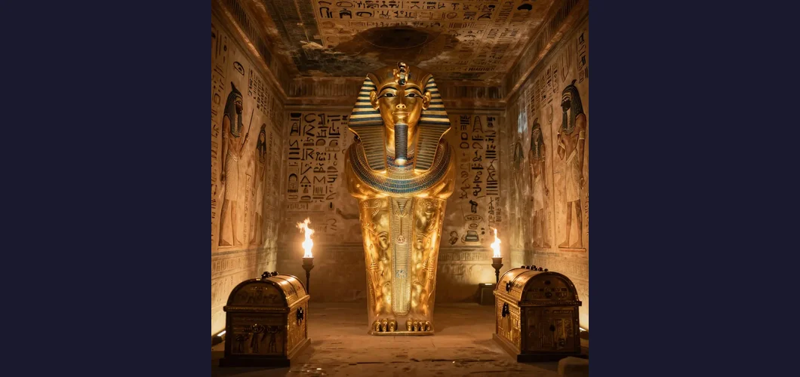
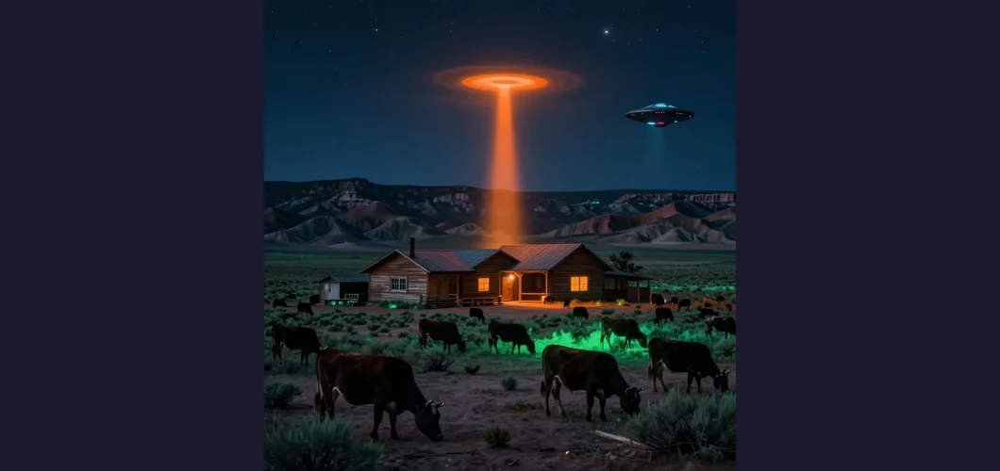

Ancient Mysteries
View All (30) →
The Lost City of Atlantis: Plato’s Ancient Story of Pride and Disaster

The Nazca Lines: Ancient Desert Drawings That Are Best Seen From the Sky

The Baghdad Battery: Did Ancient Civilizations Discover Electricity 1,500 Years Early?

The Moai of Easter Island: How Did the Rapa Nui Move About 900 Giant Stone Statues?

The Great Sphinx of Giza: Secrets of Egypt’s Giant Stone Guardian

The Library of Alexandria: The Most Famous Library of the Ancient World

The Antikythera Mechanism: An Ancient Greek Computer 1,500 Years Ahead of Its Time

The Curse of Tutankhamun: Myth, Media, and the Science Behind Egypt's Most Famous Legend
Angkor Wat: The Largest Religious Monument Ever Built and the City That Vanished

The Fall of the Minoans: How Earth's Biggest Eruption Toppled a Civilization
Interesting History
View All (27) →
The Lost Colony of Roanoke: America's Oldest Unsolved Mystery and the Word Carved in Wood

The Franklin Expedition: Arctic Ice, Lost Ships, and the Inuit Who Knew Where They Were

The Princes in the Tower: England's Most Enduring Royal Mystery

Salem Witch Trials: How Mass Hysteria and Fear Executed 20 People in Colonial America

The Oak Island Money Pit: 200 Years of Treasure Hunting and the World's Most Famous Hole

The Voynich Manuscript: The Most Mysterious Book in the World

The Winchester Mystery House: Decades of Building, Staircases to Nowhere, and an Heiress Changed by Grief

The Flannan Isle Lighthouse Mystery: Three Keepers Who Vanished Without a Trace

Anastasia Romanov: The Princess Who Vanished and the Woman Who Spent 60 Years Pretending to Be Her

Black Dahlia: The Gruesome 1947 Murder That Remains Hollywood's Greatest Unsolved Case
Unknown Phenomena
View All (24) →
The Tunguska Event: The Morning the Sky Exploded Over Siberia
Dyatlov Pass Incident: The 1959 Mystery of 9 Hikers Whose Deaths Are Still Argued About

USS Nimitz Tic Tac Encounter: The Navy Pilot UFO Sighting That the Pentagon Couldn't Explain

The Mandela Effect: Why Millions of People Remember a History That Never Happened

Chupacabra: The Blood-Sucking Beast That Terrorized Latin America and Became a Global Legend

Loch Ness Monster: An Old Legend, Sonar Contacts, and the Photograph That Fooled the World

Mothman: The Winged Creature That Terrorized a West Virginia Town for 13 Months

Roswell UFO Incident: The 1947 Crash That Launched a Thousand Conspiracy Theories

Skinwalker Ranch: The 480-Acre Property in Utah Where Paranormal Activity Became a Government Secret